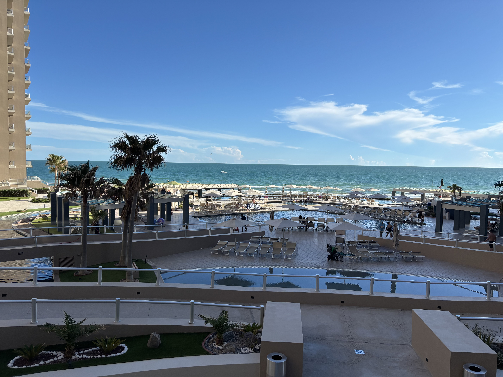

About Me
Hello, I'm Matthew Green! My background includes aviation and telecommunications. I have interests in technology, traveling, and DIY projects. My goal is to leverage my skills in web development to create engaging and user-friendly websites.
Skills and Interests
I have aquired many skills throughout my career. I started my career working on helicopters in the United States Navy. My specialities with helicopters included flight controls, hydraulic systems, and structural components. Later, I transitioned into telecommunications, where I honed my skills in network management and infrastructure. Here are some of my key skills and interests:
- Web Development (HTML, CSS, JavaScript)

- Network Management

- Helicopter Maintenance

- Technology

- Traveling 
- DIY Projects

Projects
Here are some of the projects I have worked on during my web development journey:
- Personal Portfolio Website: Showcasing my skills, projects, and resume.
- Interactive Buttons: Creating effects while hovering over buttons.
- Card Project: A card collection with places I have traveled.
Contact Info
Location: El Paso, TX